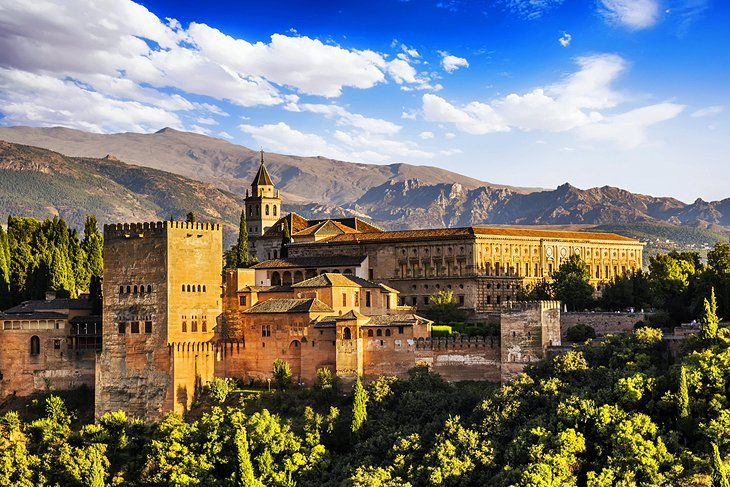
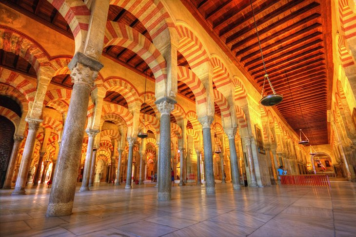

Spain
1. The Alhambra and Generalife Gardens, Granada
No matter how much you have read or how many pictures you have seen of Granada's Alhambra palaces, this Moorish pleasure palace will still take your breath away. The Nasrid dynasty's royal palace is the artistic highlight of Spain's Islamic period, when Al-Andalus - as they called Andalucía - represented the epitome of culture and civilization in medieval Europe. The Alhambra complex includes several buildings, towers, walls, gardens, and a mosque, but it's the indescribably intricate stone carvings, the delicate filigrees, the magnificent tile-lined ceilings, the graceful arches, and serene courtyards of the Nasrid palace that will haunt your dreams. That said, the adjoining palace built for the Emperor Charles V, even in its unfinished state is the finest example of High Renaissance architecture in Spain. And Generalife's terraced gardens offer a peaceful respite from the grandeur, and splendid views back at the rest of the Alhambra. Travelers should set aside at least a half day to visit the Alhambra palaces and several days to explore the tourist attractions of Granada. Besides the Alhambra, other highlights of Granada include the UNESCO-listed Albaicín, the medieval Moorish quarter; the 16th-century Capilla Real de Granada (Royal Chapel); and the Sacromonte quarter, where flamenco performances take place in gypsy caves.
2. Barcelona's Sagrada Familia and Gaudí Sites
Antoni Gaudí took the architectural style known as Art Nouveau a step further, even, some have argued, into absurdity. The fanciful and outrageous buildings he created in Barcelona have become landmarks, the most emblematic tourist attractions of this Catalan city. Foremost is the Basílica de la Sagrada Família, officially the Temple Expiatori de la Sagrada Família or the Holy Family Church of the Atonement. One of Europe's most unconventional churches, it is also unfinished, so as you look down from its tower, you can see the work in progress below. You may search in vain for absolute straight lines in Gaudí's Casa Milà, his last and most famous secular work; it resembles a piece of sculpture more than a functional building. Be sure to ascend to its roof – the chimneys are said to have inspired the image of Darth Vader from Star Wars. New in 2022, the fantastic Casa Batlló, an iconic Gaudí building with mask-shaped balconies and an undulating façade, presents Magic Nights outdoor concerts on the building's rooftop terrace. Parc Güell overlooks the city from a hillside, the views and gardens framed by fantastical creatures – salamanders, fish, an octopus – and designs in bright ceramic-chard mosaics. A fanciful towered house near the entrance is largely covered with colorful ceramic pieces. Gaudí's monuments appeal even to children and to adults who don't care a thing about architecture, for one simple reason: they are just plain fun to look at.

3. The Great Mosque of Córdoba (La Mezquita)
Once the principal mosque of western Islam and still known as La Mezquita, Córdoba's Great Mosque is one of the largest in the world and the finest achievement of Moorish architecture in Spain. In spite of later alterations that carved out its center to build a Catholic cathedral at its heart, the Great Mosque ranks with the Alhambra in Granada as one of the two most splendid examples of Islamic art and architecture in western Europe. Building materials from Roman and Visigothic buildings were used in the construction, which began in 785, and by 1000, it had grown to its present dimensions, its prayer hall with no fewer than nineteen aisles. No matter where you stand or which direction you look, its rows of columns and rounded Moorish arches line up in symmetrical patterns. Other top tourist attractions of Córdoba include the flower-bedecked patios in the Judería (old Jewish quarter) near the Great Mosque; the Palacio de Viana, a 15th-century aristocratic palace; and the Alcázar de los Reyes Cristianos, the former Caliphal Palace that Catholic king Fernando III took over in the 13th century. Narrow, winding streets; small squares; and low whitewashed houses fill the Judería, lending a Moorish atmosphere inherited from its past.
4. The Prado and Paseo del Artes, Madrid
One of the top tourist attractions in Madrid, the Prado alone ranks with the world's top art museums for the riches of its collections. But add the Reina Sofía National Art Museum, the Thyssen-Bornemisza National Museum, and the CaixaForum, all along Madrid's mile-long, tree-shaded boulevard, and you have what may be the world's highest concentration of priceless art treasures. It's no wonder this is known as El Paseo del Arte, Boulevard of the Arts. After a 2007 expansion that doubled its exhibition space, the Prado added another 12 galleries in 2009 to house a collection of works by Goya and other late 19th-century artists. The Prado has the world's largest collection of Spanish art, an impressive continuum from 12th-century medieval works through the avant-garde movement of the early 20th century, and is especially noted for its works from Spain's golden age by El Greco, Velázquez, and Goya. But its riches are not all Spanish; other highlights are the medieval murals and retablos, paintings by Flemish and Dutch artists (be sure to see the fantasy world of Hieronymus Bosch and works by Rubens and Brueghel), and Italian art (Botticelli, Raphael, Correggio, Titian, and Tintoretto). Highlights of the Museo Reina Sofía's impressive 20,000-piece collection are Picasso's Guernica and works by Miró, Dalí, Dubuffet, Braque, Serra, Calder, and Magritte.

5. San Lorenzo de El Escorial
San Lorenzo de El Escorial, about 45 kilometers northwest of Madrid, was the summer home of Spain's kings, and in 1563, work was begun here on a huge complex, which would include a monastery, church, royal palace, mausoleum, library, and museum, all conceived as a monument to Philip II and his reign. The result is a staggering collection of attractions, built around 16 courtyards, its rooms and structures connected by 16 kilometers of corridors. At its core is the church, the highlight of which is Herrera's 30-meter-high retablo, made of jasper and red marble and approached by a flight of 17 steps. Along with the vaulted and frescoed ceilings by Tibaldi in the rooms off the lower cloister, highlights of the monastery are the Panteón de los Reyes (the Baroque burial vault of the Spanish kings) and the library, a grand room also adorned with Tibaldi frescoes. In the palace, be sure to see the Bourbon Suite, where the state apartments of Charles IV are decorated with rare furnishings and 338 tapestries. Beyond are the art-filled private apartments of Philip II. The Picture Gallery below has a large collection of fine paintings, including works by Hieronymus Bosch, Albrecht Dürer, Titian, Tintoretto, Veronese, Velázquez, and El Greco.